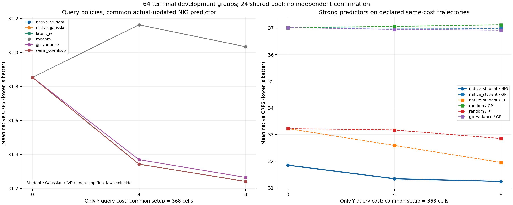

这是公开源码/聚合报告子集。原始测量值、逐条预测、拟合状态与本地日志不在Git中；原完整报告和所有数值证据保留在独立核验的本地v2资源包。此派生页面只调整资源链接并加此范围说明，未改变任何结果数字或科学主张。
native_student最终平均原生CRPS 31.241520，相对共同warm起点变化 -0.611545。候选/最强已列参照之比 1.000000，是否进入预设2%描述带：True。差值负为候选更好；该带不是非劣效检验或统计显著性结论。

| 最终参照 | 参照CRPS | 候选−参照 |
|---|---|---|
| native_gaussian/NIG | 31.241520 | 0.000000 |
| latent_ivr/NIG | 31.241520 | 0.000000 |
| random/NIG | 32.033831 | -0.792311 |
| gp_variance/NIG | 31.265153 | -0.023633 |
| warm_openloop/NIG | 31.241520 | 0.000000 |
| native_student/GP | 36.989763 | -5.748243 |
| native_student/RF | 31.955195 | -0.713675 |
| random/GP | 37.121720 | -5.880200 |
| random/RF | 32.853508 | -1.611989 |
| gp_variance/GP | 36.919984 | -5.678464 |
| 策略 | 实际池索引顺序（原始元数据顺序） |
|---|---|
| native_student | [11, 22, 12, 16, 8, 20, 0, 3] |
| native_gaussian | [11, 22, 12, 16, 8, 20, 0, 3] |
| latent_ivr | [11, 22, 12, 16, 20, 8, 0, 3] |
| random | [1, 8, 17, 10, 19, 18, 9, 22] |
| gp_variance | [11, 3, 16, 12, 15, 20, 8, 22] |
| warm_openloop | [11, 22, 12, 16, 8, 20, 0, 3] |
同一真Y更新NIG比较查询策略；GP/RF在native_student和random轨迹获得同样真实训练集；GP主动策略另保留自己的GP预测。18次sklearn拟合为13 GP和5 RF，共享warm及GP step4复用均明确记账。下表同时列90%区间覆盖与宽度，数值正确不等于概率校准；没有在这64个终端标签上选择新缩放或参数。区间单位沿用源bulk字段GPa归属，仍受历史聚合口径限制。
| 查询策略 | 预测器 | 新Y成本 | 原生CRPS | 中位数RMSE | 90%覆盖 | 90%宽度 |
|---|---|---|---|---|---|---|
| native_student | NIG | 0 | 31.853064 | 58.218902 | 56/64 (87.5%) | 192.353326 |
| native_student | NIG | 4 | 31.343019 | 57.639152 | 56/64 (87.5%) | 186.827084 |
| native_student | NIG | 8 | 31.241520 | 57.775715 | 56/64 (87.5%) | 183.200789 |
| native_gaussian | NIG | 0 | 31.853064 | 58.218902 | 56/64 (87.5%) | 192.353326 |
| native_gaussian | NIG | 4 | 31.343019 | 57.639152 | 56/64 (87.5%) | 186.827084 |
| native_gaussian | NIG | 8 | 31.241520 | 57.775715 | 56/64 (87.5%) | 183.200789 |
| latent_ivr | NIG | 0 | 31.853064 | 58.218902 | 56/64 (87.5%) | 192.353326 |
| latent_ivr | NIG | 4 | 31.343019 | 57.639152 | 56/64 (87.5%) | 186.827084 |
| latent_ivr | NIG | 8 | 31.241520 | 57.775715 | 56/64 (87.5%) | 183.200789 |
| random | NIG | 0 | 31.853064 | 58.218902 | 56/64 (87.5%) | 192.353326 |
| random | NIG | 4 | 32.162397 | 57.832113 | 59/64 (92.2%) | 208.313637 |
| random | NIG | 8 | 32.033831 | 57.590167 | 59/64 (92.2%) | 204.627266 |
| gp_variance | NIG | 0 | 31.853064 | 58.218902 | 56/64 (87.5%) | 192.353326 |
| gp_variance | NIG | 4 | 31.369658 | 57.810421 | 56/64 (87.5%) | 187.171841 |
| gp_variance | NIG | 8 | 31.265153 | 57.872580 | 56/64 (87.5%) | 182.861094 |
| warm_openloop | NIG | 0 | 31.853064 | 58.218902 | 56/64 (87.5%) | 192.353326 |
| warm_openloop | NIG | 4 | 31.343019 | 57.639152 | 56/64 (87.5%) | 186.827084 |
| warm_openloop | NIG | 8 | 31.241520 | 57.775715 | 56/64 (87.5%) | 183.200789 |
| native_student | GP | 0 | 37.016114 | 64.415020 | 60/64 (93.8%) | 205.232862 |
| native_student | GP | 4 | 36.996041 | 64.399531 | 60/64 (93.8%) | 205.167485 |
| native_student | GP | 8 | 36.989763 | 64.379780 | 60/64 (93.8%) | 203.530646 |
| native_student | RF | 0 | 33.226071 | 62.424156 | 57/64 (89.1%) | 180.306453 |
| native_student | RF | 4 | 32.592795 | 61.169963 | 57/64 (89.1%) | 178.373422 |
| native_student | RF | 8 | 31.955195 | 61.077351 | 56/64 (87.5%) | 176.851703 |
| random | GP | 0 | 37.016114 | 64.415020 | 60/64 (93.8%) | 205.232862 |
| random | GP | 4 | 37.060891 | 64.548725 | 61/64 (95.3%) | 228.028122 |
| random | GP | 8 | 37.121720 | 64.716051 | 60/64 (93.8%) | 223.027707 |
| random | RF | 0 | 33.226071 | 62.424156 | 57/64 (89.1%) | 180.306453 |
| random | RF | 4 | 33.172548 | 62.395803 | 56/64 (87.5%) | 203.168891 |
| random | RF | 8 | 32.853508 | 62.093839 | 56/64 (87.5%) | 199.120844 |
| gp_variance | GP | 0 | 37.016114 | 64.415020 | 60/64 (93.8%) | 205.232862 |
| gp_variance | GP | 4 | 36.950828 | 64.349722 | 60/64 (93.8%) | 206.004593 |
| gp_variance | GP | 8 | 36.919984 | 64.302501 | 60/64 (93.8%) | 202.044051 |
保留完整NIG不确定性，在warm固定变换下以原生单位跨目标proper-score期望风险选点，并与潜变量IVR、潜矩匹配Gaussian原生风险、随机、GP方差与标签盲开放环比较。开放环选择用warm均值、设计V和已知查询计数，实际预测仍用真Y更新，不生成伪测量。proper-score主动学习、NIW/NIG、Student-t共享尺度均有先例，任务适配的价值必须由这些公平对照实证，不能重命名为新原理。
注册协议 · 6文件冻结 · IO审校 · 保存IO核查 · 独立评分核查 · 主执行源码 · 原始结果
只读聚合与绘图，无重拟合、查询、原生CDF评分、bootstrap或推断检验。报告UTC 2026-11-06T06:18:46.821532+00:00；结果SHA dedca9a97c86e259708133d5750111c9b9e653546ebe411f92890fd37f1347b3。